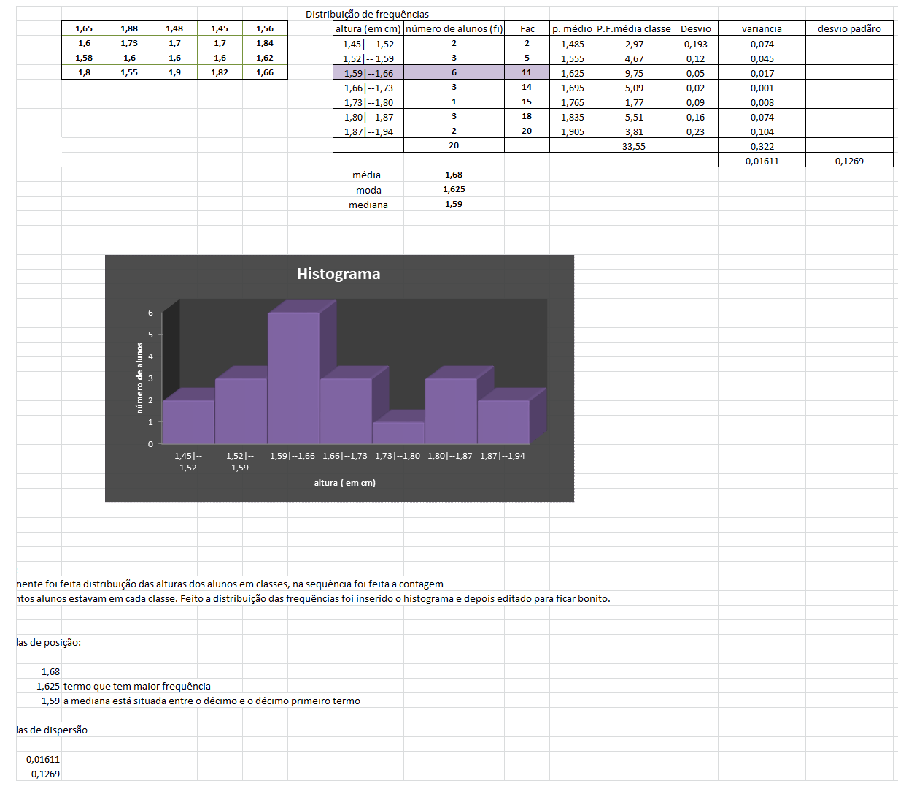
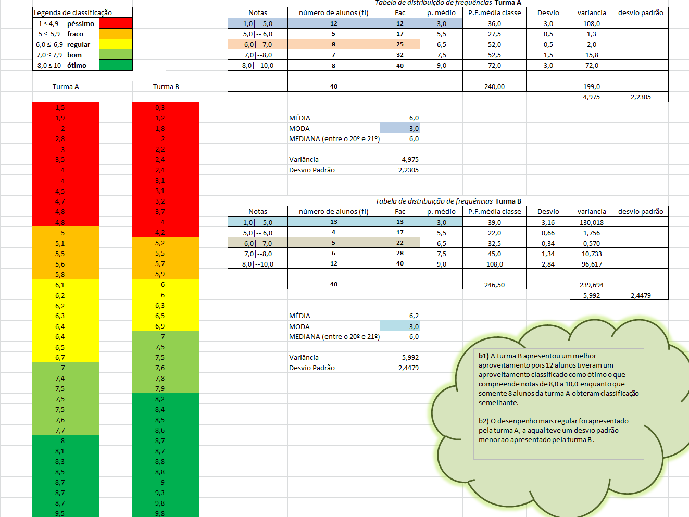

Medidas de Posição
•Reflexão:
Em estatística existem diversos cálculos que são realizados para posteriormente analisar os números. Nesse trimestre estudamos as medidas de posição: média aritmética simples, média aritmética ponderada, mediana e moda. Essas medidas de posição também chamadas de centralização são valores que representam uma coleção de dados.
•Ilustração:
Os cálculos de tendência são utilizados para analisar o comportamento de um conjunto de dados estatísticos. Durante o trimestre realizamos alguns exercícios onde esses cálculos puderam ser aplicados.
Exemplo1: Questão 3 do trabalho 6
Uma turma de 20 estudantes do IFRS fez medições de suas alturas. A tabela abaixo apresenta os dados brutos levantados.
1,65 1,88 1,48 1,45 1,56
1,60 1,73 1,70 1,70 1,84
1,58 1,60 1,60 1,60 1,62
1,80 1,55 1,90 1,82 1,66
a) Organize uma tabela de distribuição de frequência por classes e um histograma. Explique os passos realizados.
b) Calcule as medidas de posição (média, moda e mediana) e de dispersão (variância, desvio padrão e coeficiente de variação).

Exemplo 2: Questão 4 do trabalho 6
Um professor aplicou um teste de raciocínio lógico nas suas duas turmas do 1º ano do EMI. As notas obtidas pelos alunos são dadas a seguir:
Turma A
4,0 4,8 6,2 7,7 3,0 5,5 6,2 1,5 7,5 4,0 9,5 8,1 5,0 7,4 6,7 6,4 5,8 7,0 8,7 8,5
4,7 5,1 6,1 8,7 6,3 7,5 8,3 3,5 2,8 4,5 6,5 7,5 6,4 4,8 8,0 8,7 7,6 2,0 1,9 5,6
Turma B
9,0 0,3 8,7 7,6 6,0 5,7 8,8 3,7 2,0 2,2 8,4 3,1 7,8 4,2 9,8 6,5 1,2 2,4 4,0 3,1
7,5 8,7 1,8 2,4 6,0 3,2 5,2 5,5 5,9 6,9 8,2 7,9 8,5 8,8 7,0 6,3 9,3 7,5 8,6 9,8
a) Em cada caso, divida os alunos em 5 categorias de aproveitamento (péssimo, fraco, regular, bom e ótimo) estabelecendo os limites de cada uma. A seguir, faça uma tabela de frequência.
b) A partir das medidas estatísticas estudadas, responda:
b1) Qual turma apresentou melhor aproveitamento?
b2) Qual turma apresentou desempenho mais regular?

•Justificativa:
As medidas de tendência central são cálculos importantes para se compreender de forma mais clara os dados apresentados, podem representar listas inteiras em um único número. Essas medidas permitem uma simplificação para a análise de um conjunto numérico, o que justifica a escolha deste tópico.